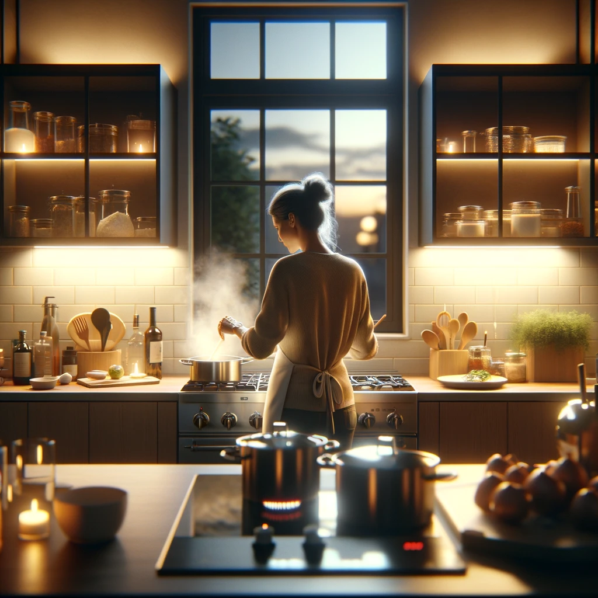
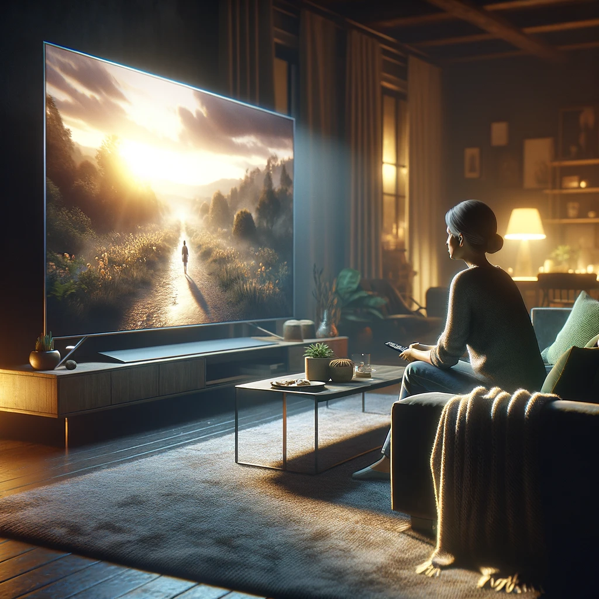

Individuelle Tagesabläufe
Ein entspanntes Frühstück am Morgen mit Pancakes, Früchten und einem schwarz Tee.
Ein schnelles Frühstück mit einem Kaffee.
Ein gemütliches Frühstück mit Waffeln und einem Kaffee.

